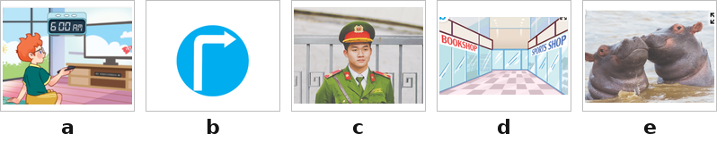
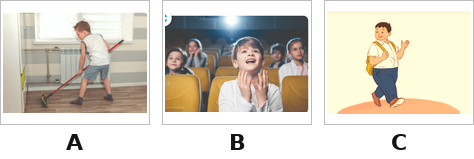
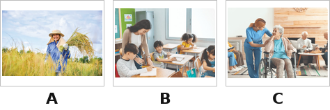
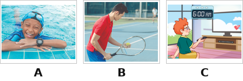
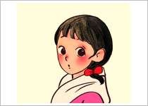
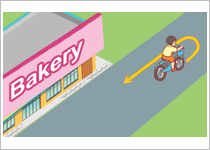
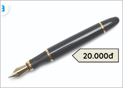

Last weekend, it was rainy. Jenny didn’t go out. It’s nice today. Jenny wants to go to the bookshop. The bookshop is in Hoang Hoa Tham Street. It’s a busy street. She wants to buy an English book. It’s fifty thousand dong.
Her friend, Hoa wants to go to the cinema to watch films. The cinema is in Tran Xuan Soan Street near the swimming pool. She can go straight and turn right. The cinema is on the right. It’s very big.
Nhập thông tin để hệ thống ghi nhận kết quả.
Bạn có thêm 5 phút để hoàn tất. Hết 5 phút bài sẽ tự động nộp.
Hành vi này đã được ghi nhận. Hãy quay lại chế độ toàn màn hình để tiếp tục làm bài.